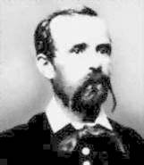

Madách Imre
1823 januárjában született a Nógrád megyei Alsósztregován, régi, művelt, nemesi családból származott. Édesapja korán meghalt. Madách a gimnázium hat osztályát magántanulóként végezte. 1837-ben került Pestre, az egyetem bölcsészeti tanfolyamára, majd jogi karára. 1840-ben visszatért Nógrádba, s szerepet vállalt a megyei közéletben. Beteg alkata miatt azonban rövidesen visszavonult.
1845-ben feleségül vette a bihari alispán lányát: Fráter Erzsébet, három gyermekük született. A forradalom alatt betegeskedett, utána letartóztatták Kossuth titkárának rejtegetése miatt. Börtönideje alatt felesége megcsalta, 1854-ben elváltak. Madách csak az 1860-61-es országgyűlés idején kapcsolódott be ismét a közéletbe megyei képviselőként. A Kisfaludy Társaság és a Magyar Tudományos Akadémia tagja lett, de szívbaja súlyosbodott, és 1864 októberében meghalt.